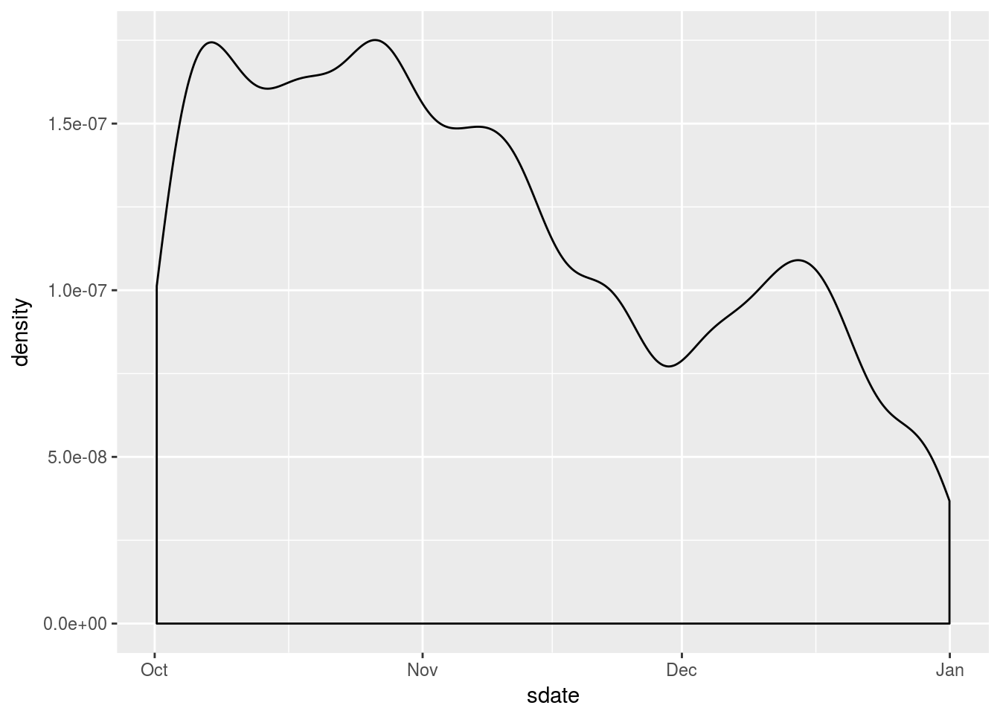
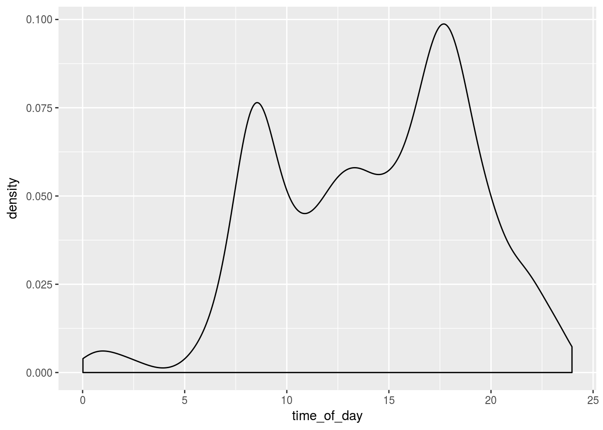
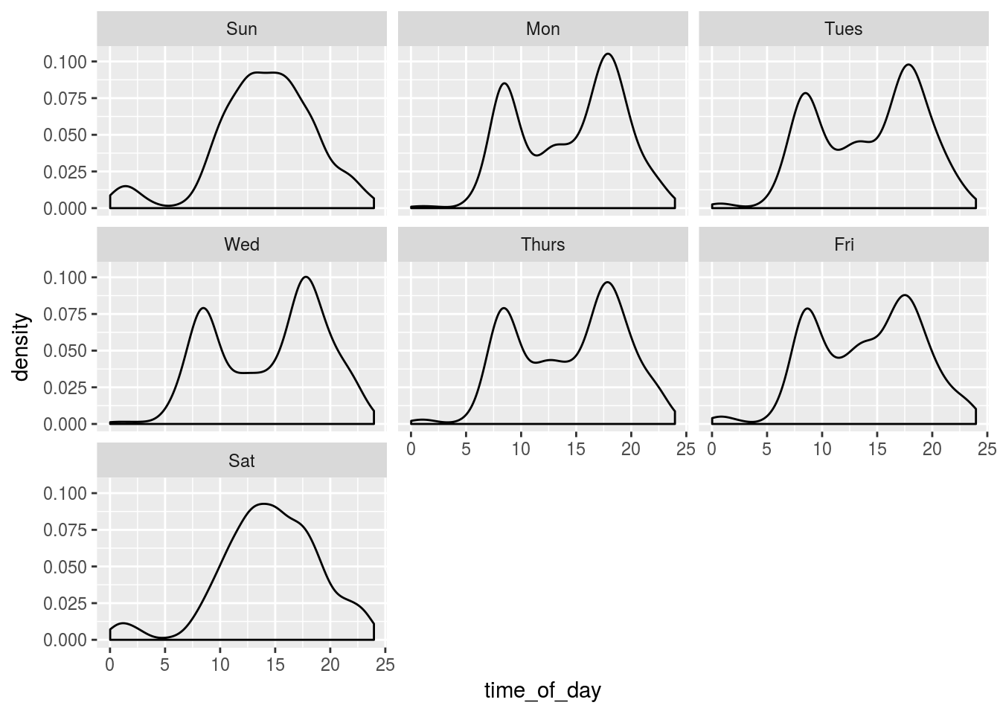
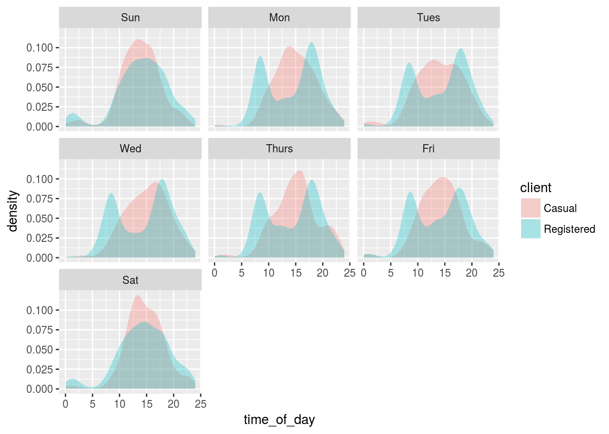
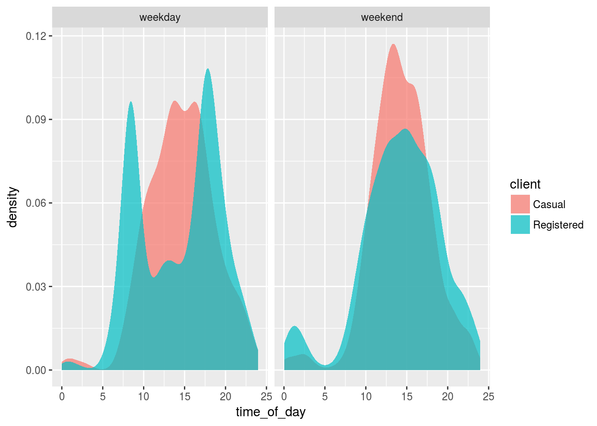

The purpose of this project is to analyze times of bicycle rentals. We’ll use the R libraries dplyr, ggplot2, lubridate, as well as the 2014-Q4-Trips-History-Data-Small.rds data set.
First we’ll do a geometric desity plot by date.
Trips %>%
ggplot(aes(x =sdate)) + geom_density()
Now by time of day.
Trips <- Trips %>%
mutate(time_of_day = hour(sdate) + minute(sdate) / 60 , day_of_week = wday(sdate, label = TRUE), wday = ifelse(wday(sdate) %in% c(1,7), "weekend", "weekday" ))
Trips %>%
ggplot(aes(x =time_of_day)) + geom_density()
Next we’ll separate out the plot by day of the week.
Trips %>%
ggplot(aes(x =time_of_day)) + geom_density() + facet_wrap( ~day_of_week) 
Now an overlay separating registered and casual users.
Trips %>%
ggplot(aes(x =time_of_day)) + geom_density(aes(fill = client), alpha = 0.3, color = NA) + facet_wrap( ~day_of_week) 
Due to the similarity of the week days with each other as well as the week end days with eachother, we’ll separate into these two groups and draw the same plot.
Trips %>%
ggplot(aes(x =time_of_day)) + geom_density(aes(fill = client), color = NA, alpha = 0.7) + facet_wrap( ~wday)